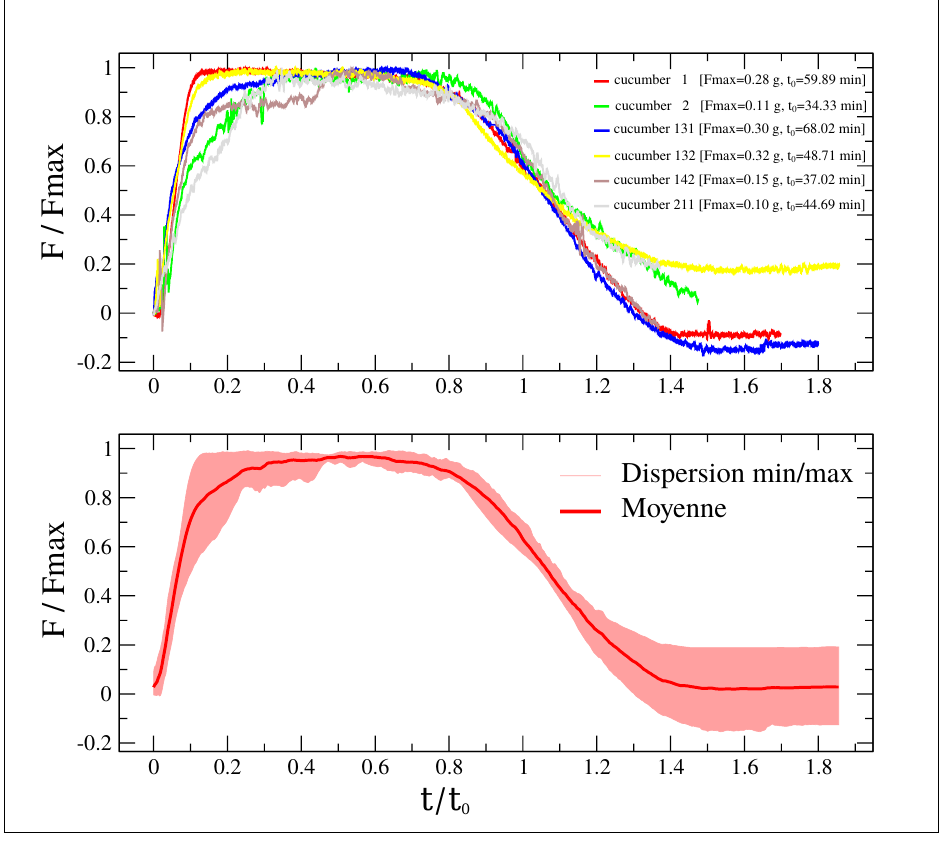

Léo Barouh
Doctorant en physique du vivant au Laboratoire Matière et Systèmes Complexes (MSC).
Fast hydraulics of plant tendrils: experiment and modelling
Léo Barouh1, Dražen Zanchi1, Julien Derr2
1Laboratoire de la matière et des systèmes complexes, Paris, France
2Laboratoire Reproduction et Développement des Plantes, Lyon, France
Climbing plants such as cucumber and passionflower use tendrils to attach to supports. Upon sustained contact, a tendril wraps around the obstacle and writhes irreversibly along its whole length. However, a brief mechanical stimulation of the ventral face, without sustained attachment, triggers a distinct response: a fast and fully reversible writhing, whose driving mechanism is presumably hydraulic. This motion remains poorly characterised quantitatively.
We developed a low-stiffness traction setup combining a 10 g force sensor with photographic shape tracking. Excised tendrils are clamped at the base and tethered at the apex through a soft spring. Since the ends are held collinear, the tendril adopts a helical shape and generates a measurable axial force.
In both cucumber and passionflower, the force profile systematically follows three phases: a rapid rise (5–10 min), a plateau (~30 min), and a slow, incomplete relaxation. Normalised curves collapse onto a single master curve, suggesting a single dominant mechanism. Maximum forces reach 0.7 g for cucumber and 2 g for passionflower (1 to 20 mN). The cycle is repeatable after a few hours of rest. Under imposed pre-tension, the plateau force decreases and appears to vanish near 2 g.
These results are consistent with a model of the tendrils as a bilayer of poroelastic tissue, predicting hydraulic timescales of 1.5 to 15 minutes and generated forces of a few millinewtons, which is in agreement with measurements. The tendril therefore behaves as a reversible and repeatable mechanostimulable plant-based force generator, or a vegetal muscle. It offers a living example of a soft hydraulic poroelastic actuator.
